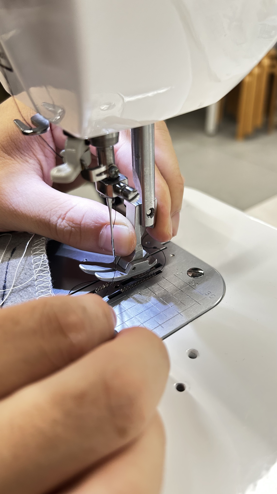
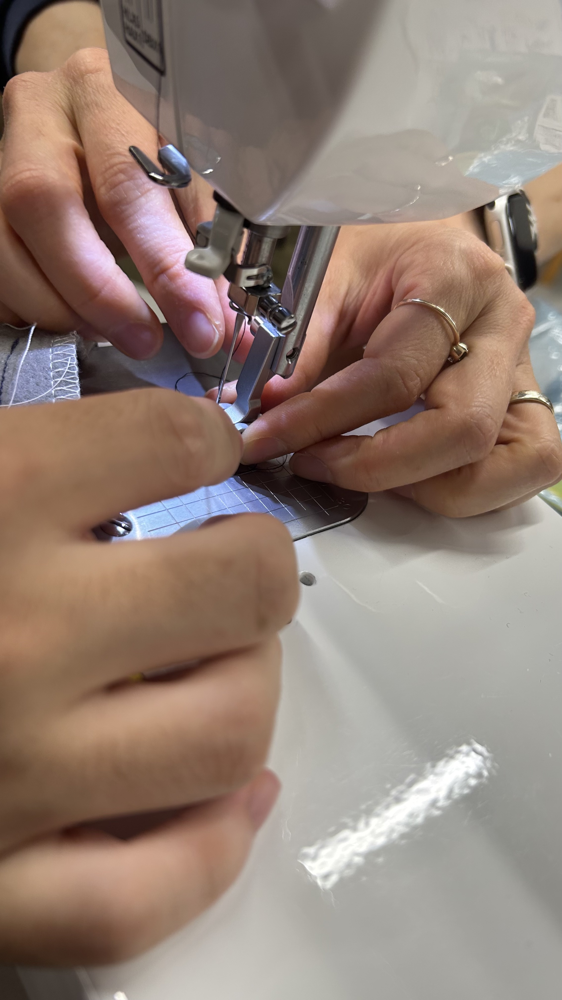
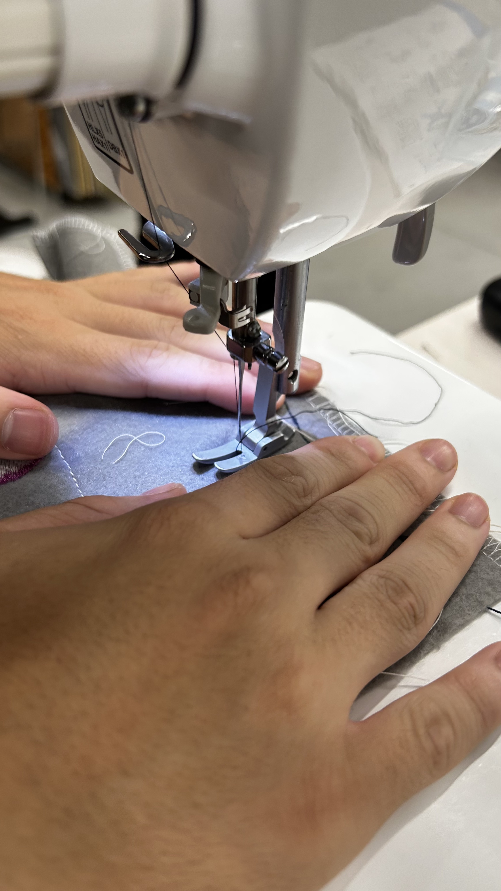
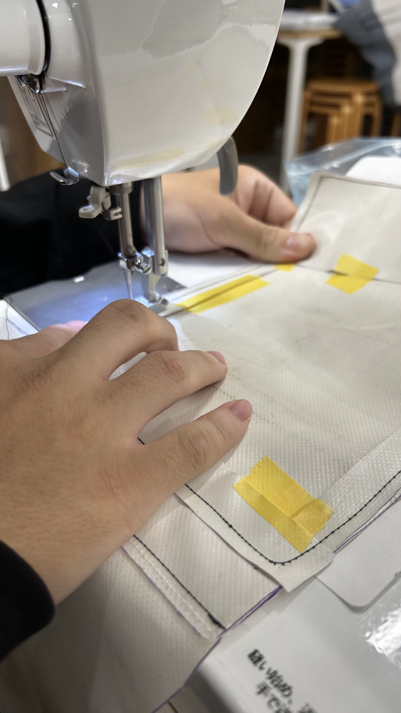
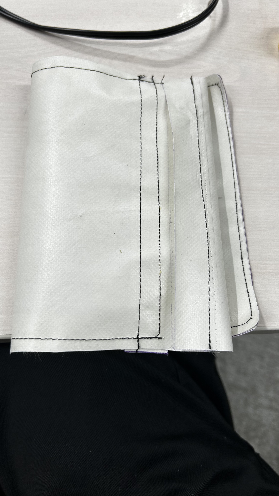
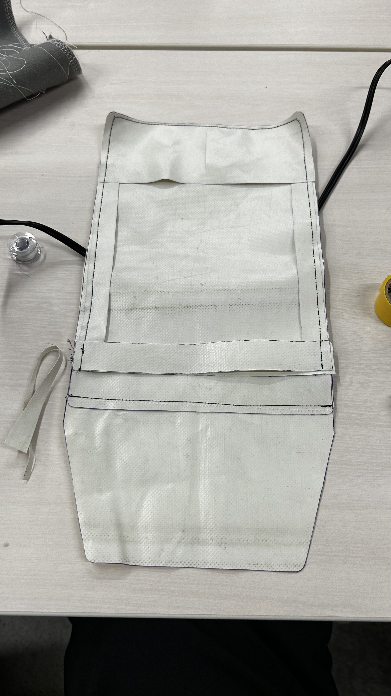

10月後半道用ゼミのまとめ
まず、ターポリンの特徴について調べた前半ではグループを組んでブックカバーを制作することが決定した。
と言うことで、前回切り終えていたターポリンを組み合わせる作業を後半では行った。
ミシンを皆小中学生ぶりに利用したためやや時間がかかったようにも感じられた。
まず、試し縫いをし



そこから本番ターポリンをミシンで塗った。

そうして完成したのが下の画像のものだ。


次回は構想をしているクッション、またはフィンガー（指人形）を制作しようかなと個人的に考えている。
恐らく次回はグループで話し合いが終わっている状態で制作に臨んでいると思われる。